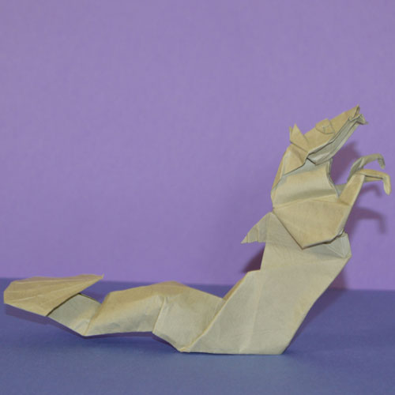

The designer, Quentin Trollip, really captured my attention towards the posture of the majestic horse-mermaid.Diagrams can be found in the book "Origami Sequence". I highly suggest wet-folding this model to achieve the soft fold on the tail and to strengthen this model.